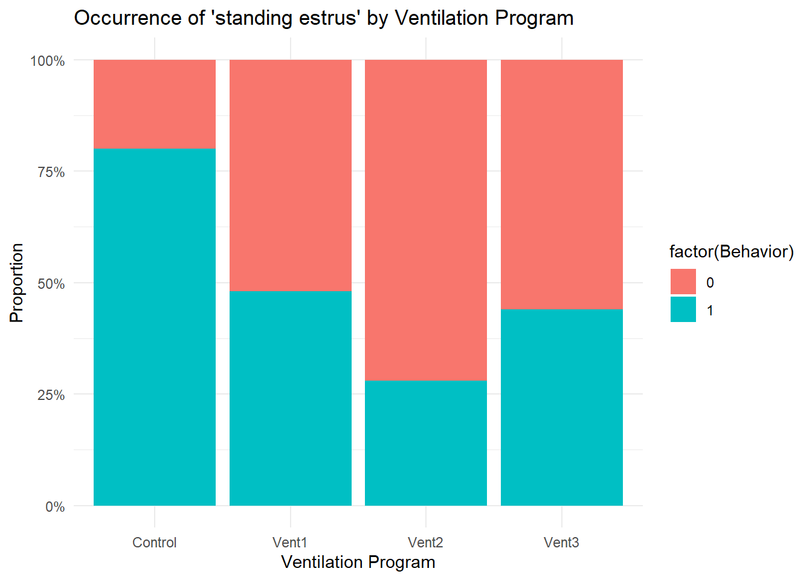
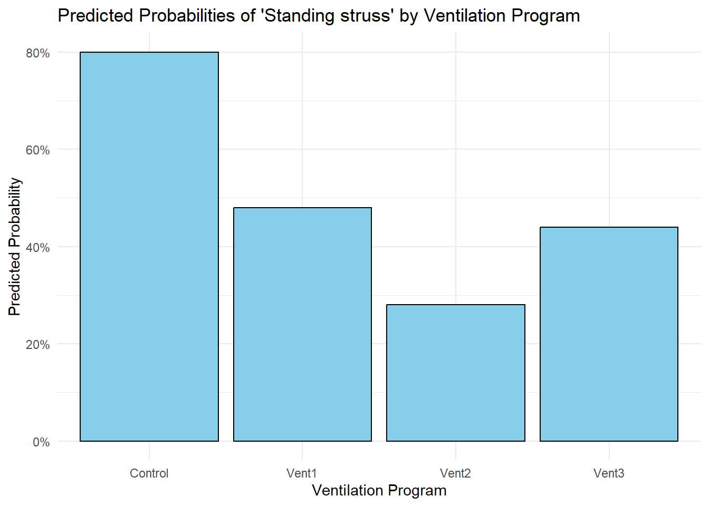
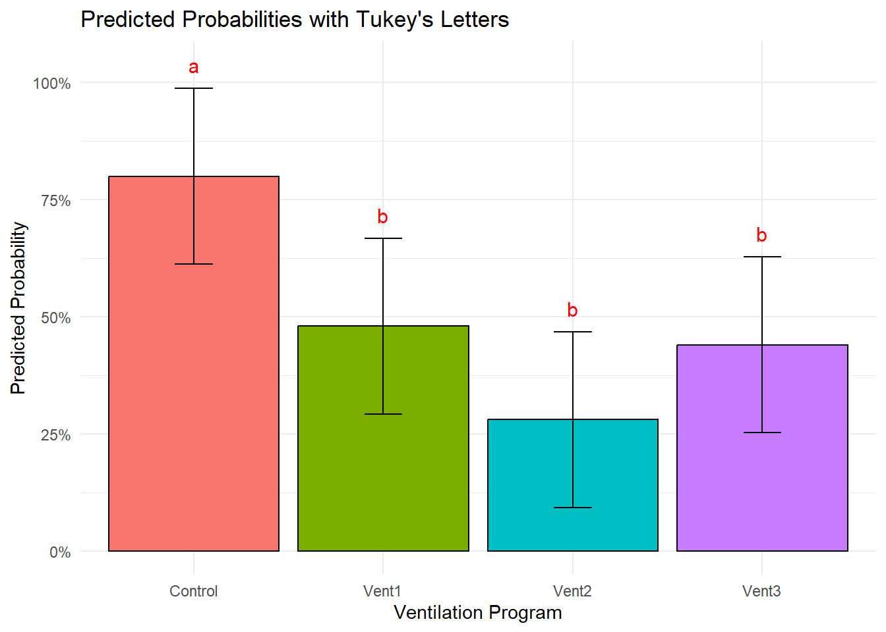

In the previous chapter, we explored the basic linear model, which assumes Gaussian errors and is suitable for continuous outcomes. However, real-world data often involves categorical or count outcomes, requiring an extension of the model. This leads us to Generalized Linear Models (GLMs), which allow for a broader range of response variable types.
7.1 Generalized Linear Models (GLMs):
Generalized Linear Models (GLMs) extend the basic linear model, introducing additional flexibility through two key components:
Link Functions: Unlike the linear model, GLMs incorporate link functions to capture the relationship between the linear predictor and the expected value of the response variable. This is particularly beneficial when dealing with non-continuous outcomes, allowing for a more versatile modeling approach (McCullagh and Nelder 1989; Dobson 2002).
Probability Distributions: GLMs are designed to accommodate a range of probability distributions for the response variable, making them suitable for handling non-Gaussian data. For example, the binomial distribution is frequently utilized in GLMs for binary outcomes (McCullagh and Nelder 1989; Dobson 2002).
7.1.1 Example: Binomial Model for Animal Behavior
Let’s consider a scenario where we’re investigating the occurrence of a certain animal behavior, such as standing estrus in cows. This behavior can be represented as a dichotomous variable (0 for absence, 1 for occurrence). We’ll construct a binomial GLM to model this binary outcome based on different ventilation programs.
We will explore the logit linking function, among others like probit and cloglog. The logit function is mathematically defined as:
\[g(\mu) = \frac{1}{1 + e^{-\mu}}\]
where:
\(g(\mu)\) is the probability of success (occurrence),
\(\mu\) is the linear predictor.
The linear predictor, \(\mu\), is defined as a linear combination of the predictors:
This mirrors the structure of the linear model discussed in the preceding chapter.
In the context of the binomial GLM, the probability of success (\(p\)) is related to the linear predictor through the logistic function:
\[p = \frac{1}{1 + e^{-(\beta_0 + \beta_1X_1 + \beta_2X_2 + \ldots + \beta_kX_k)}}\] Please note that due to the presence of the linking function, it becomes possible to accommodate non-linear relationships between the dependent and independent variables.
Develop the example in R
# Load necessary librarieslibrary(tidyverse)library(stats)# Create a sample datasetset.seed(123)animal_data<-data.frame( Ventilation =rep(c("Vent1", "Vent2", "Vent3", "Control"), each =25), Behavior =c(rbinom(n =25, size =1, prob =.6),rbinom(n =25, size =1, prob =.4),rbinom(n =25, size =1, prob =.4),rbinom(n =25, size =1, prob =.7)))# Visualize the dataggplot(animal_data, aes(x =Ventilation, fill =factor(Behavior)))+geom_bar(position ="fill")+labs(title ="Occurrence of 'standing estrus' by Ventilation Program", x ="Ventilation Program", y ="Proportion")+scale_y_continuous(labels =scales::percent_format())+theme_minimal()

# Fit a binomial GLM with logit link functionbinomial_model_logit<-glm(Behavior~Ventilation, data =animal_data, family =binomial(link ="logit"))# Display the summary of the model with logit link functionsummary(binomial_model_logit)
Call:
glm(formula = Behavior ~ Ventilation, family = binomial(link = "logit"),
data = animal_data)
Coefficients:
Estimate Std. Error z value Pr(>|z|)
(Intercept) 1.3863 0.5000 2.773 0.00556 **
VentilationVent1 -1.4663 0.6405 -2.289 0.02206 *
VentilationVent2 -2.3308 0.6696 -3.481 0.00050 ***
VentilationVent3 -1.6275 0.6421 -2.534 0.01126 *
---
Signif. codes: 0 '***' 0.001 '**' 0.01 '*' 0.05 '.' 0.1 ' ' 1
(Dispersion parameter for binomial family taken to be 1)
Null deviance: 138.63 on 99 degrees of freedom
Residual deviance: 123.58 on 96 degrees of freedom
AIC: 131.58
Number of Fisher Scoring iterations: 4
To interpret the coefficients of a binomial GLM with a logit link function, you can exponentiate them to obtain odds ratios. The interpretation of odds ratios involves understanding the change in odds for a one-unit increase in the predictor. Here’s how you can create a table and explain the log-odds:
# Create a table for coefficient interpretationcoef_table<-exp(coef(binomial_model_logit))# Display the tableprint(coef_table)
The values in the table represent the odds ratios for each predictor. An odds ratio greater than 1 implies an increase in the odds of success (behavior occurrence), while an odds ratio less than 1 implies a decrease in the odds.
Now, let’s explain what log-odds means:
The log-odds, or logit, is the natural logarithm of the odds. In the context of a logistic regression model, the log-odds can be interpreted as the logarithm of the odds of an event occurring. The transformation from the linear predictor (\(\mu\)) to the log-odds is achieved by the logit function:
Here, \(\mu\) is the predicted probability of the event (e.g., behavior occurrence). The log-odds represent a linear relationship with the predictors, making it suitable for regression modeling. Exponentiating the coefficients of a logistic regression model yields odds ratios, providing a more interpretable understanding of the impact of predictors on the odds of the event. Let’s interpret each coefficient in the context of the odds ratio:
(Intercept): Represents the odds of the event (e.g., behavior occurrence) in the absence of ventilation. In this scenario, it signifies the odds of occurrence when Ventilation is at the reference level (e.g., Control) or, more precisely, when there is no ventilation.
VentilationVent1: Captures the effect of Ventilation = “Vent1” relative to the absence of ventilation. An odds ratio of 0.23 suggests that, while holding other variables constant, the odds of the event are 77% lower for Ventilation = “Vent1” compared to the absence of ventilation.
VentilationVent2: Similarly reflects the effect of Ventilation = “Vent2” relative to the absence of ventilation. An odds ratio of 0.097 implies that the odds of the event are 90.3% lower for Ventilation = “Vent2” compared to the absence of ventilation.
VentilationVent3: The odds ratio of 0.196 implies an 80.4% reduction in the odds of the event for Ventilation = “Vent3” compared to the absence of ventilation.
This interpretation clarifies that the intercept represents the starting point or baseline when there is no ventilation.
We can also visualize the predicted probabilities for each ventilation program as follows:
# Predicted probabilitiespredicted_probs<-predict(binomial_model_logit, type ="response", newdata =animal_data)# Visualize the predicted probabilitiesanimal_data$Predicted_Prob<-predicted_probsggplot(animal_data, aes(x =Ventilation, y =Predicted_Prob))+geom_col(position ="dodge", fill ="skyblue", color ="black")+labs(title ="Predicted Probabilities of 'Standing struss' by Ventilation Program", x ="Ventilation Program", y ="Predicted Probability")+scale_y_continuous(labels =scales::percent_format())+theme_minimal()

But, we can also apply Tukey’s HSD (Honestly Significant Difference) test to compare the ventilation programs and then add letters to the predicted probability plot to indicate statistically significant groups. Here’s how you can do that:
Warning: package 'agricolae' was built under R version 4.3.2
# Perform Tukey's LSD testtukey_results<-LSD.test(aov(binomial_model_logit), "Ventilation", group =TRUE)tukey_results
$statistics
MSerror Df Mean CV t.value LSD
0.2233333 96 0.5 94.51631 1.984984 0.2653254
$parameters
test p.ajusted name.t ntr alpha
Fisher-LSD none Ventilation 4 0.05
$means
Behavior std r se LCL UCL Min Max Q25 Q50
Control 0.80 0.4082483 25 0.09451631 0.6123866 0.9876134 0 1 1 1
Vent1 0.48 0.5099020 25 0.09451631 0.2923866 0.6676134 0 1 0 0
Vent2 0.28 0.4582576 25 0.09451631 0.0923866 0.4676134 0 1 0 0
Vent3 0.44 0.5066228 25 0.09451631 0.2523866 0.6276134 0 1 0 0
Q75
Control 1
Vent1 1
Vent2 1
Vent3 1
$comparison
NULL
$groups
Behavior groups
Control 0.80 a
Vent1 0.48 b
Vent3 0.44 b
Vent2 0.28 b
attr(,"class")
[1] "group"
# Extract the letter results into a data frametukey_g<-as.data.frame(tukey_results$groups)# Extract the mean differences and group namestukey_df<-as.data.frame(tukey_results$means)tukey_df<-mutate(tukey_df, trt =rownames(tukey_df))merged<-left_join(tukey_df, tukey_g, by ="Behavior")
# Visualize the predicted probabilities with Tukey's lettersggplot(merged, aes(x =trt, y =Behavior, fill =trt))+geom_col(position ="dodge", color ="black")+geom_errorbar(aes(ymin =LCL, ymax =UCL), width =0.2)+labs(title ="Predicted Probabilities with Tukey's Letters", x ="Ventilation Program", y ="Predicted Probability")+scale_y_continuous(labels =scales::percent_format())+theme_minimal()+geom_text(data =merged, aes(x =trt, y =UCL+0.05, label =groups), size =4, color ="red")+theme(legend.position ="none")

It’s crucial to highlight that the initial approach holds substantial advantages over employing post hoc tests. This is because the coefficients, significantly differing from zero, inherently indicate distinctions among all treatments. This fundamental insight simplifies the analysis, rendering post hoc tests less necessary in this context.
Additionally, the interpretability of log odds contributes to the straightforward understanding of the results. Unlike complex statistical measures, log odds provide a clear and accessible way to grasp the differences between treatments. This simplicity enhances the practical utility of the analysis, making it more accessible to a broader audience.
References
Dobson, A. J. 2002. An Introduction to Generalized Linear Models. CRC Press.
McCullagh, P., and J. A. Nelder. 1989. Generalized Linear Models. CRC Press.